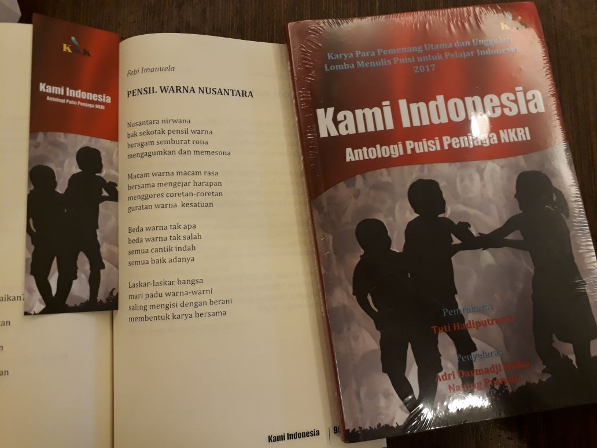
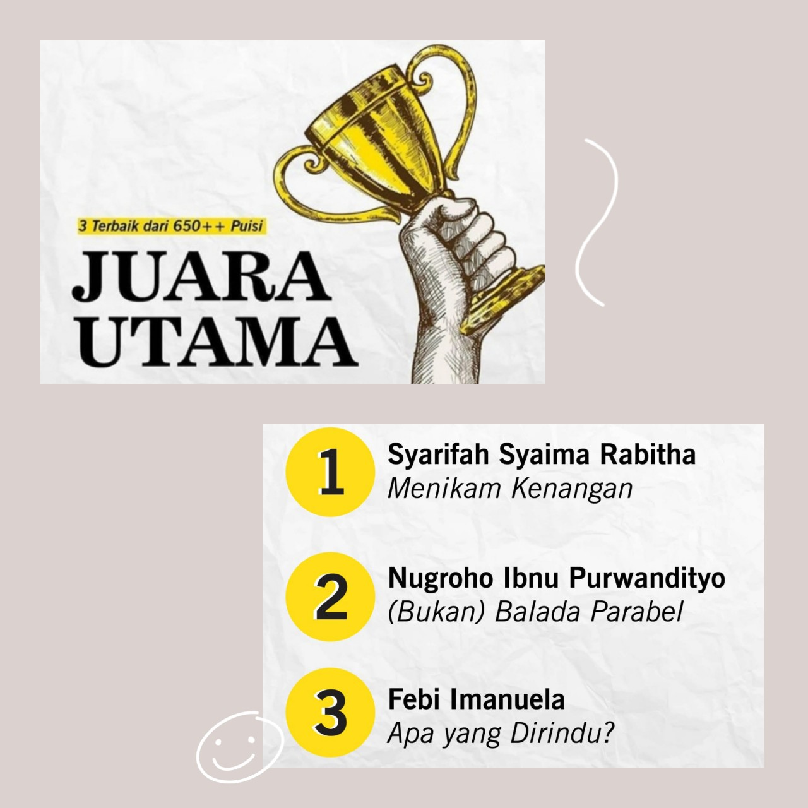
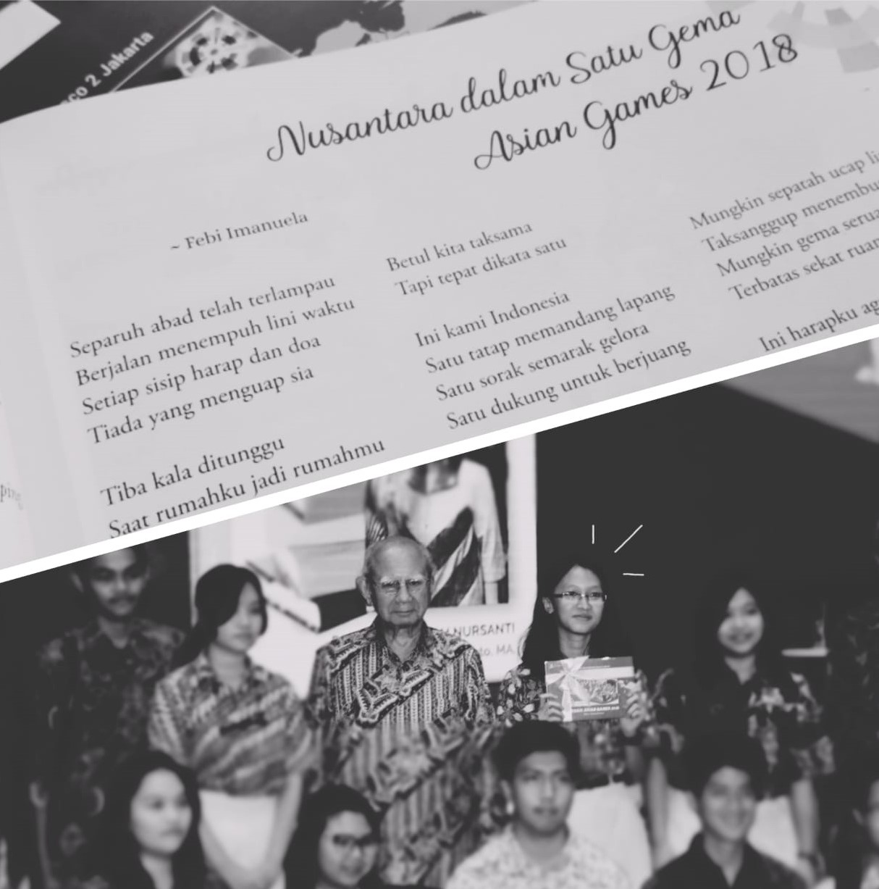
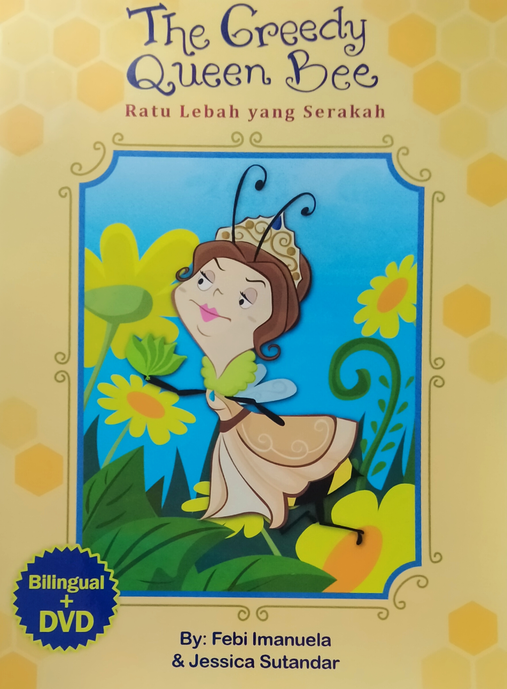
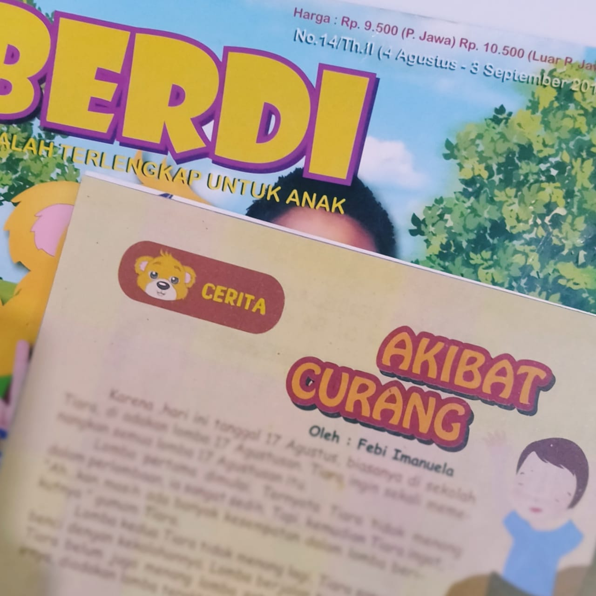

1st winner for senior highschooler category, of national poetry competition for students
held by Rayakultura, "Lomba Menulis
Puisi Aku Cinta Indonesia untuk Sekolah Dasar, SMP/SLTP, dan SMA/SLTA Tingkat Nasional 2017".
Her poem, "Pensil
Warna Nusantara", was then
published on "Kami Indonesia, Antologi Puisi Penjaga NKRI".

2nd winner from 597 submissions for senior highschooler category, of 3000+ words short story
competition
held
by Indonesian Consultant at Law (ICLaw) and Rayakultura, "Lomba Cipta Cerita Pendek Cinta Bumi
ICLaw Green Pen Award 2019" , that was participated by entrants from Indonesia,
Hongkong, Malaysia
and Taiwan. Her story, "Selamat
Ulang Tahun", was then published on "Daun Tebu Keemasan" book.

3rd winner from 650+ submissions, of national poetry competition held by Badan Sastra, "Lomba
Cipta Puisi Mini Nasional 2020". Her poem, "Apa yang Dirindu?", was then published on
"Merangkai
Kenangan" book.

Wrote "Nusantara dalam Satu Gema Asian Games 2018" poem as the opening for "Mozaik Asian Games 2018" book. The book itself was written by senior highschooler of Don Bosco II.
(This photo was taken on the book launching event at Perpusnas with Prof. Dr. Emil Salim, former Minister of State for Development Supervision and the Environment Indonesia)

The Greedy Queen Bee always demanded honey from the bees, and the bees had to work hard to meet her demand. One day, strong winds blew and caused all the flowers to wilt. The bees could not collect any honey for the Queen Bee. What were the bees going to do? -- BILINGUAL + StoryTelling animated DVD
Author: Febi Imanuela
Translator: Jessica Sutandar
(2011)
>> Order here <<

Some of Febi's fictional stories were published on
the 14th (2011), 19th (2012), and 22nd (2012) edition of BERDI kid magazine. The stories were
written when she was 8 years old.